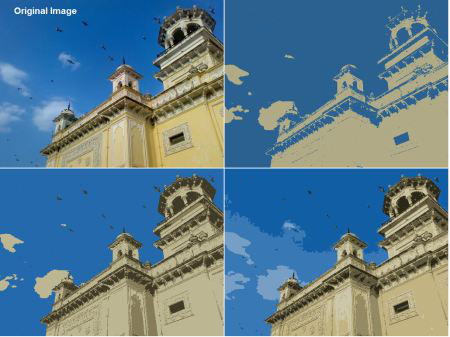

Customized T-Shirt printing costs go up with the number of colors used in the print. To minimize the costs, the number of colors used in the image has to be reduced.
Digital Images are represented as matrices. Each cell in a matrix represents a pixel, which holds the color value of that pixel. Each color is expressed as a set of 3 integers (R,G,B); 0 <= R,G,B < 256. Therefore, there are 256*256*256 colors that can be represented in a digital image. Therefore, N unique colors, means N unique (R,G,B) values. For example, (111,0,25), (12, 2,0) and (65,10,32) are three unique colors.
A T-Shirt printing startup wanted to set-up an application on their website, where customers can upload an image and select the number of colors to be used in the print, see a preview of the t-shirt. Help the T-Shirt startup by proposing a method which can reduce the number of colors in an image.
Example:

Image (1) is the original image. Image (2) contains only 2 colors. Image (3) contains 4 colors. Image(4) contains 8 colors.
Note - This is a comprehension question
This question carries 20 marks